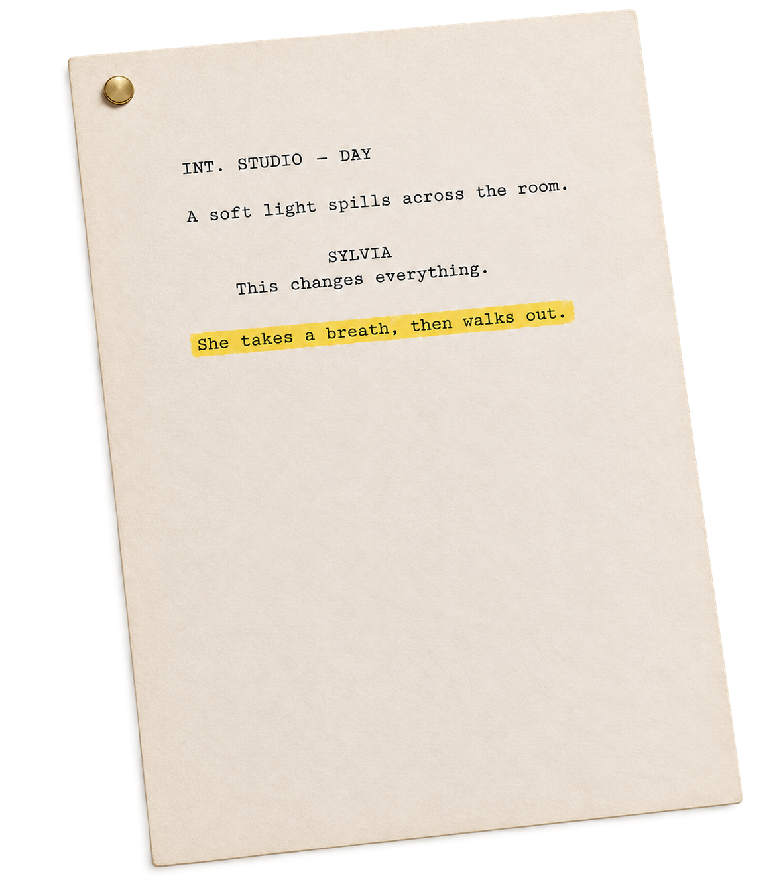
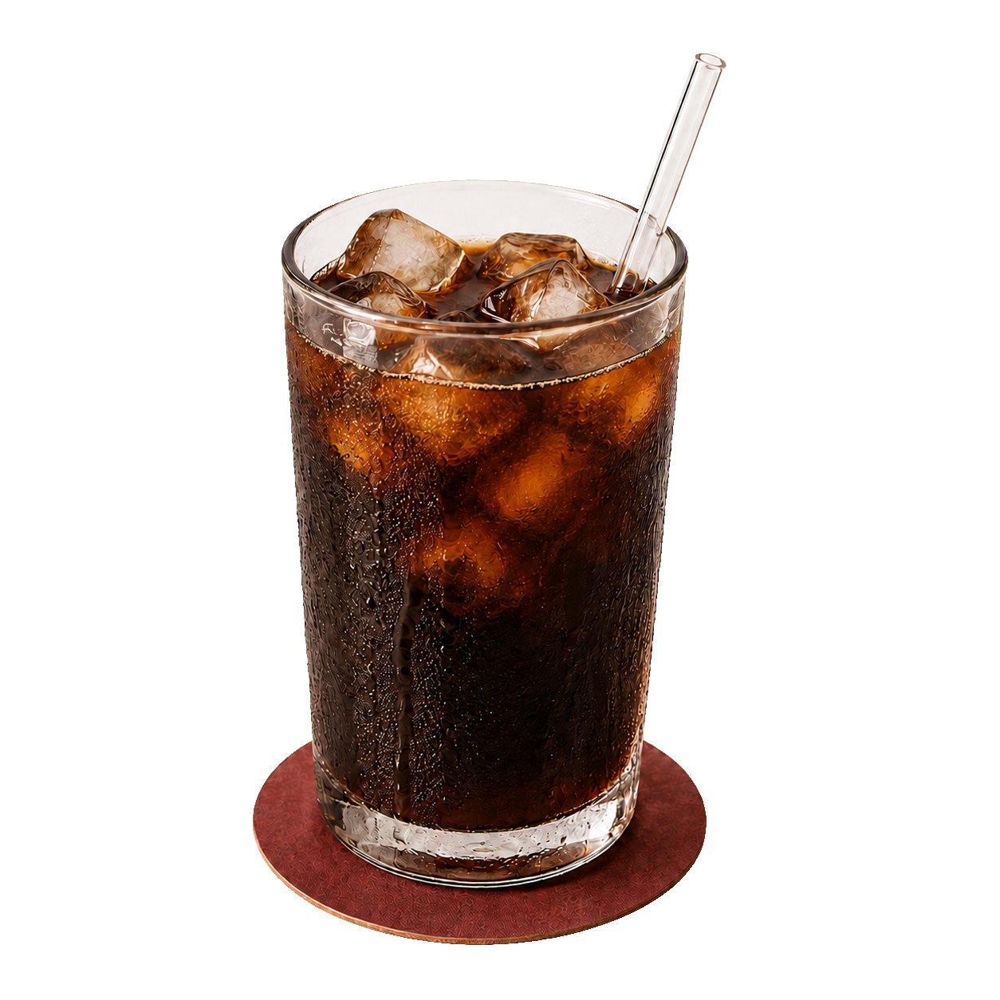
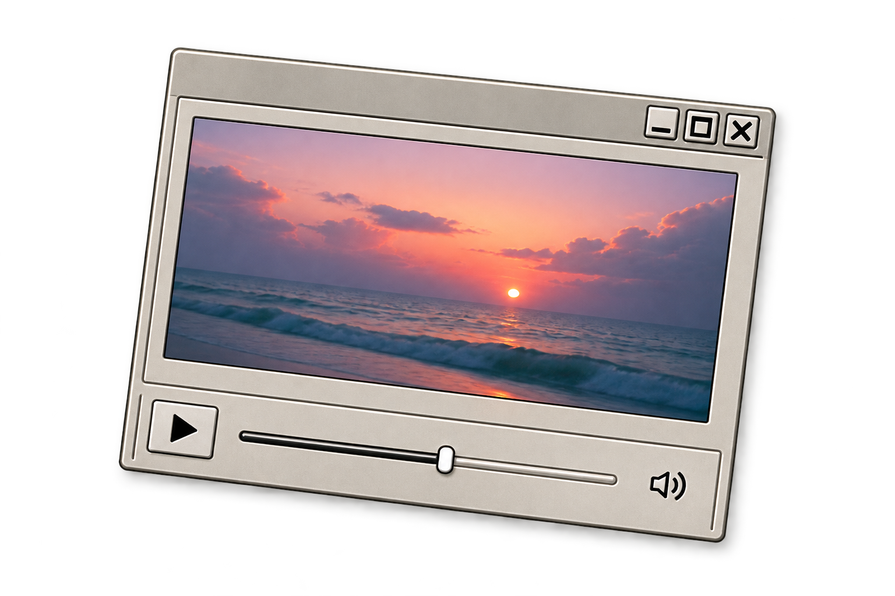
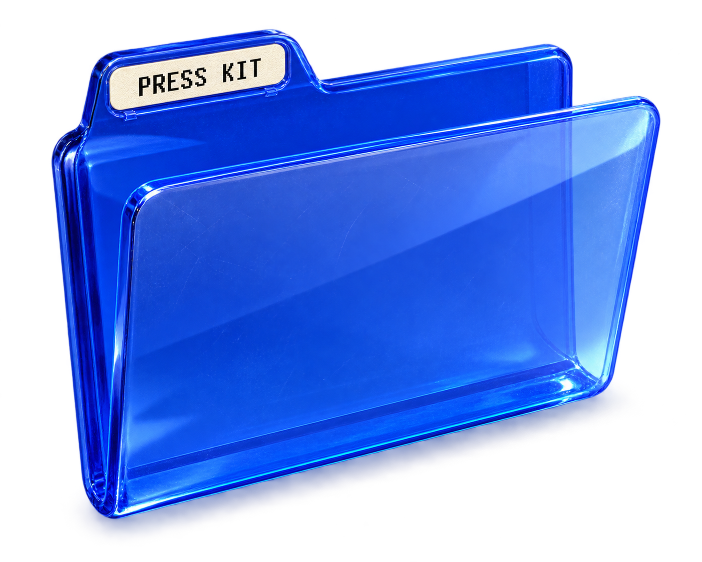
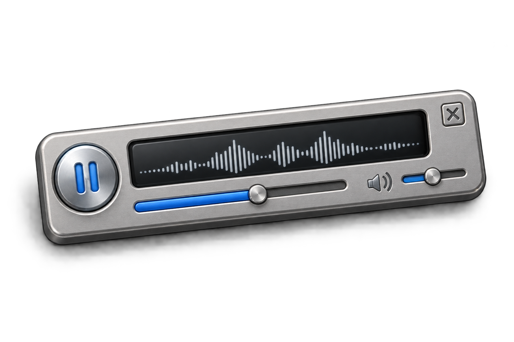
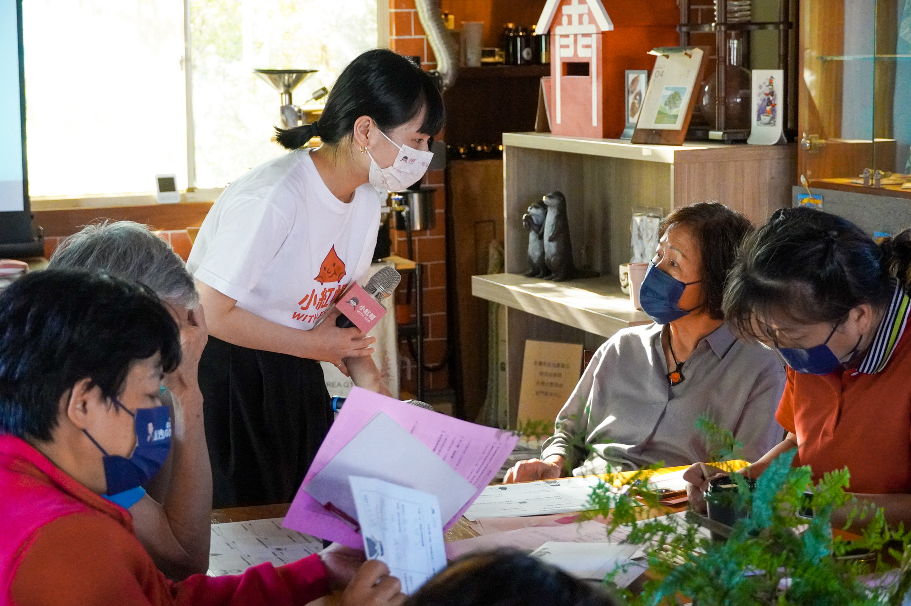
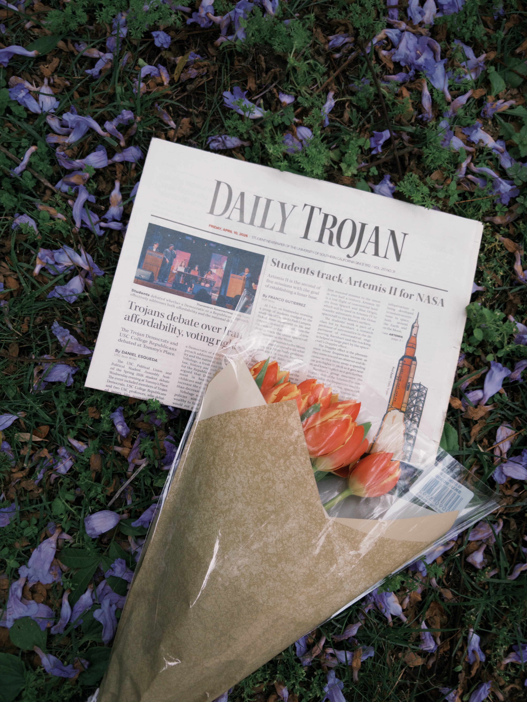
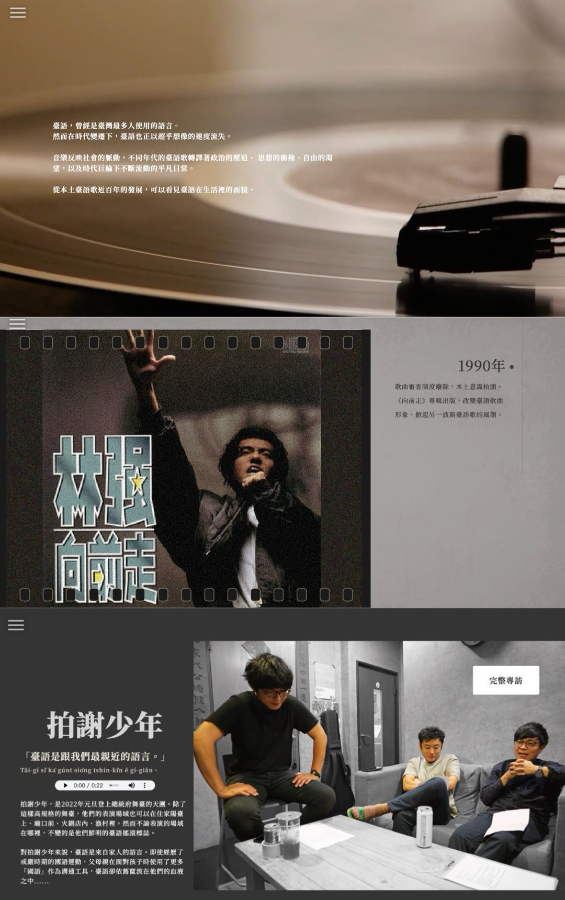

Yin-Chu Lin
Communications & Content Strategy
Culture · Media · Entertainment · Lifestyle
Making sense of people, stories, and change.
See the workWork




Resume
Practice
Publicity · Content Strategy · Editorial · Multimedia Production
Communications strategist with 5+ years of experience in earned media, editorial strategy, stakeholder engagement, and cross-cultural storytelling across nonprofit, news, and creator organizations.
0+
Earned media placements across Taiwanese and international outlets
0.0M+
Short-form video views across social platforms
Education
University of Southern California
M.S. in Global Media and Communications · 2026
London School of Economics and Political Science
M.S. in Global Media and Communications · 2026
National Taiwan University
M.S. in Health Behaviors and Community Sciences · 2022
B.S. in Public Health · 2020
Contact